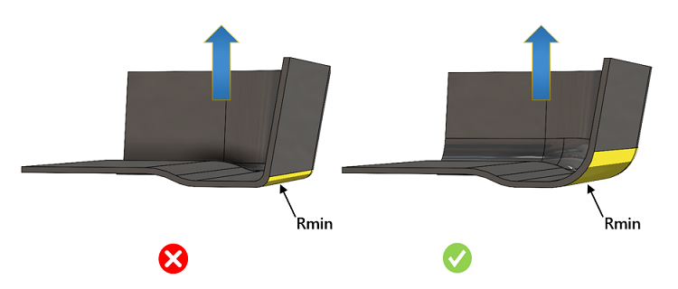

このルールは、パーツ内の最小コーナー半径および鋭利なエッジをチェックします。
真空樹脂注入成形（Vacuum Infusion Process：VIP）では、最小コーナー半径は避けるべきです。最小半径は、金型内への材料のスムーズな流動を妨げ、材料の過度な肉薄化を引き起こし、応力集中の原因となります。半径が小さい場合、材料は滑らかに流れず収縮し、パーツの破れを引き起こします。
設計性およびコストの観点から、真空樹脂注入成形パーツでは、角張ったコーナーではなく、大きな半径を持つ滑らかで連続した曲線形状とすることが望まれます。多くの場合、より大きな半径が推奨されます。
一般的なガイドラインとして、真空樹脂注入成形パーツでは、樹脂のスムーズな流動を確保するために大きなコーナー半径を付与し、最小半径となる設計は避けることが推奨されます。

ここで、
R = Minimum Radius "最小半径"